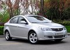

汽车企业季报
根据近日发布的车企季报，一季度几乎所有汽车上市公司的净利润都出现成倍的增长。其中，创下增幅新纪录的当数东风汽车，其一季度净利润为1.86亿元，与去年的几百万元相比，增加了7481．57％。但利润最高的依然是上海汽车，自去年宣布自主品牌开始盈亏平衡后，上海汽车今年真正迎来了丰收期，一季度净利润达到29亿元，是去年全年净利润65亿的近一半，同比增幅达358.96%。上汽方面表示，利润的增长大部分来自于汽车销量的增长。一汽轿车一季度赚了7亿净利润，增幅也高达181.94％；长安汽车延续去年数十倍的增长态势，增幅达到2684.48%，其中，同比增长229.62%的自主品牌以及长安福特马自达汽车投资收益的增加是主要动力。